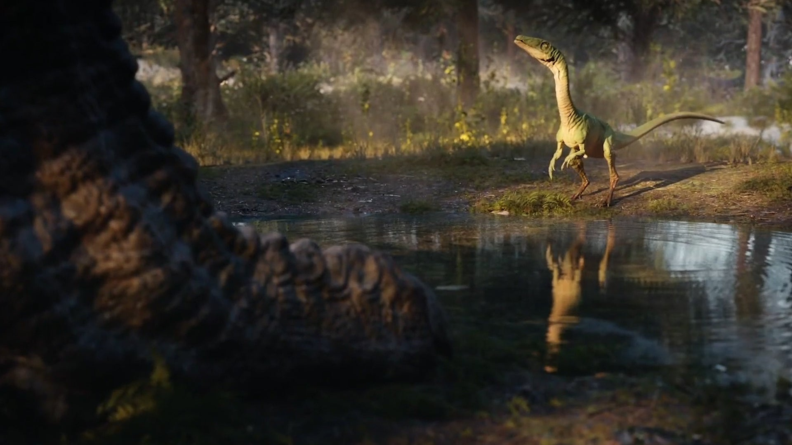

Jurassic World Evolution 2
Jurassic World Evolution 2: Dit zijn de nieuwe features Chaos Theory mode, vliegende en zwemmende dino's - ADV
De stemmen van Jeff Goldblum en Bryce Dallas Howard keren ook wederom terug!
Jurassic World Evolution 2 laat spelers precies datgene doen waar fans van de franchise altijd al van hebben gedroomd, een eigen Jurassic Park bouwen en onderhouden met spectaculaire dinosaurussen. In de tweede game van de reeks wordt er nog meer ingezet op een immersief verhaal en krijgen spelers de kans om ook vliegende en zwemmende dino's tentoon te stellen in hun park.
Bovendien is er de nieuwe Chaos Theory mode waarin spelers een echt 'wat als...' avontuur kunnen beleven met een verhaal dat als insteek heeft: Wat als er iets anders gebeurde in de films en hoe zouden spelers dat oplossen? Wij zetten de nieuwe features van Jurassic World Evolution 2 voor je op een rijtje.
Chaos Theory Mode
Laten we direct beginnen bij een van de nieuwe verhalende features van de park builder. De Chaos Theory Mode geeft spelers van Jurassic World Evolution 2 de kans om "wat als-scenario's" te spelen die dicht liggen bij de filmfranchise. Er zijn scenario's die bij elke verschenen Jurassic Park of Jurassic World-films horen en die een andere gang van zaken laten zien dan hoe de film normaal afliep. Bijvoorbeeld, wat als de slechteriken het wonnen in The Lost World en toch een branche in San Diego op konden zetten.
In de film wisten de helden via een sabotage-actie dan toch een stokje te steken voor de plannen voor een groot dino-park in Californië, maar in de game zullen spelers om moeten zien te gaan met, volgens de ontwikkelaar Frontier, een 'loslopende Indomitus Rex'. Hoe dat precies in zijn werking gaat, het is ten slotte een management game, is nog niet helemaal duidelijk, dat is aan jou om te ontdekken in de game.
Zulke scenario's zitten dus in de game voor elke film die verscheen in de Jurassic Park franchise, leuk voor fans van de films maar ook voor spelers die een uitdaging zoeken en van een verhaalgedreven scenario houden. Bovendien keren zowel Jeff Goldblum als Bryce Dallas Howard terug in de game om hun bekende personages te voorzien van in-game stemmen, net als in het eerste deel wordt de sfeer dus echt weer gecreëerd dat spelers zich daadwerkelijk in een Jurassic Park of World-productie voelen.
Nieuwe dinosaurussen om tentoon te stellen
In de eerste Jurassic World Evolution was het aanbod van dinosaurussen, waar je een genoom van moet opsporen om die vervolgens uit te laten groeien tot volwaardig reptiel, beperkt tot de land-dino's. In het tweede deel wordt het opsporen van nieuwe soorten ietwat anders en kunnen spelers bovendien aan de slag met vliegende en zwemmende dinosauriërs.
We weten al dat onder meer de vliegende Pteranodon zijn debuut maakt in de game, dit oeroude reptiel kwam ook al voor in een aantal van de films. En in een van de trailers kregen we ook al de indrukwekkende zeedino, de Mosasaurus, te zien. Er zitten nog meer zwemmende en vliegende dinosauriërs in de game die je allemaal kunt opsporen en naar je park brengen om ze te onderzoeken en te laten zien aan het publiek.
De manier waarop je de dino's in je park krijgt is ook ietwat anders dan in het eerste deel. Spelers kunnen nu zelf in een helikopter of jeep stappen om de reptielen te vinden. In totaal zegt Frontier dat er meer dan 75 reptielen te vinden zijn in de game, wil jij ze allemaal in je park?
Wat een weertje
Waar je in Jurassic World Evolution veelal in een tropisch klimaat speelde met veel gelijkaardige omgevingen en weinig invloed van die omgeving op de gameplay, zullen spelers in deel 2 wel te maken krijgen met weersomstandigheden waar ze mee om moeten leren te gaan. We weten al dat er regenachtige gebieden zijn, net als parken die middenin een vallei staan omringd door besneeuwde bergtoppen waar de sneeuw soms met bakken uit de lucht valt. Ook krijgen spelers op sommige locaties te maken met zandstormen en ander noodweer wat natuurlijk invloed heeft op het park. Spelers zullen hun beste managende skills boven moeten halen om succesvol te zijn op de plaatsen waar de natuur de grootste vijand blijkt te zijn.
Als die nieuwe features nog niet genoeg reden zijn om de park builder te gaan checken, kun je natuurlijk ook nog steeds aan de slag in een sandbox-mode waar je rustig aan je park kunt bouwen, is er wederom een verhaalgedreven campaign waar de nadruk echt ligt op immersie en heb je meer mogelijkheden om de 'enclosures' voor je dino's vorm te geven en aantrekkelijk te maken voor je publiek.
Jurassic World Evolution 2 verschijnt op 9 november op de PC, Xbox One, Series X en S, PlayStation 4 en 5 en wordt ook via Project Scarlett aangeboden aan de fans.